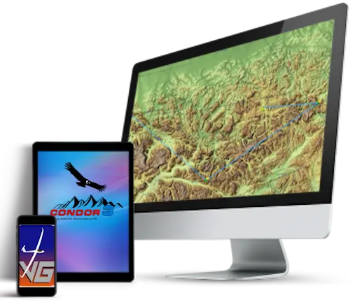

Hardware for Condor3
Specification and Operating System
All you need to get started with Condor is a decent computer with a good display and graphics card. It doesn’t have to be an expensive gaming rig. To install and run Condor 3 you will need:
- Windows 7, 8, 10 or 11
- Intel or AMD processor with CPU benchmark for single thread rating of at least 1200.
- Find your rating at: cpubenchmark
- A dedicated graphics card with a minimum of 4 GB memory. We suggest the graphics card should have a benchmark score of 8000 or above.
- Integrated graphics cards and cards with benchmark result below 1000 are usable, but will severely reduce graphics settings:
- Find your rating at: videocardbenchmark
- Internet connection is required for activation.
- Be aware that some Windows 11 audio device drivers are not perfect
- Apple Mac: Run Windows 7, 8 or 10 in Bootcamp*, Parallels Version or Wine
The Condor3 requirements are also at - Install Requirements
Controllers and Devices

Joystick
A good quality joystick is the most popular choice for realistic and accurate control of the glider. Make sure it has a twist-grip for rudder operation but not required if you are planning on using separate rudder pedals. Some joysticks have force-feed-back feature which adds to your virtual gliding experience.
An alternative option is to use an Gamepad or XBox controller. This may lack the realistic feel and relation to a real glider but it’s whatever you are comfortable with and you can achieve smooth operation of your glider. All control functions can be configured to your liking in the program settings. More on this later.
You can even use a standard keyboard and mouse for all controls but not recommended. Below are some popular choices starting from our budget choice (Extreme 3D Pro).
- Logitech Extreme 3D PRO Joystick
Rudder Pedals
USB rudder pedals are a great option for pilots who wish to have a more realistic approach. Afterall, this is a gliding simulator and you may need them for practice in flying your real glider. Alternatively, you can choose to use Condor’s inbuilt auto-rudder coordination that works in conjunction with a twist-grip joystick for manual control on take-off and landing. Here are some popular choices:
- Logitech G Pro Flight Rudder Pedals
- WINWING Orion WinWing
- VKB T-Rudder Mk.V
Headset and Mic
A headset is something you wear therefore it needs to be comfortable and to perform its function well. We recommend being very fussy with your choice. Some points to consider:
- Make sure the headset cups around your ears are very comfortable and not too small.
- Bluetooth headsets are great but one with a plug in cord as backup or for troubleshooting is handy.
- Light weight and easily adjustable.
- Having a mic that mutes automatically when you swing it up out of the way is also handy.
- The mic needs to be of a good quality in order to be heard clearly.
- Logitech G733 LightspeedLogitech
Head Tracking - Optional
Many pilots that fly Condor soaring simulator are very comfortable using a straightforward hardware setup: PC, monitor, joystick, keyboard, and mouse. It’s a proven combination—simple, effective. Any additional equipment is entirely a matter of personal preference.
If you're after a more immersive feel in the cockpit, head tracking is one way to take your experience to the next level. In thermal flying or when maneuvering near other gliders, maintaining full situational awareness is critical to avoid collisions. Head tracking offers a faster, more natural way to look around, eliminating the need to press buttons to change your view.
Another method is to use a standard webcam and software to track your head movement but this can be less accurate.
The latest and most rapidly improving techology is VR goggles. When you weigh up the cost of VR goggles versus good quality monitors and head tracking equipment, VR is becoming a great cost-effective solution. Research is key here as there are many pro’s and con’s.
Be aware that motion sickness affects many pilots in real life and in a simulator using head tracking. There are ways to train your brain to eventually overcome the terrible effects of motion sickness by initially reducing all movement settings to a minimum. Try this for about 5-10 hours. If you feel ok then increase the movement settings ever so slightly and use this setting for another 5-10 hours and so on. Over time you will eventually get to a piont you are happy with. Be patient.